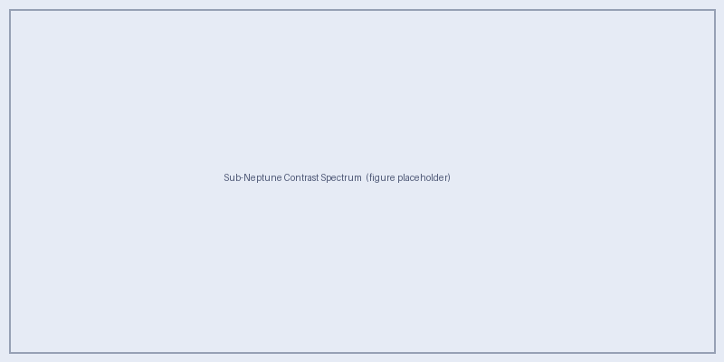

Modeling Sub-Neptunes Near the Radius Valley
Can we distinguish sub-Neptune envelopes from terrestrial atmospheres with HWO-relevant spectroscopy?
Sub-Neptunes near the radius valley (1.5–2.5 R⊕) are the primary science targets of Aurora. These planets straddle the transition between rocky super-Earths and volatile-rich sub-Neptunes, and their reflected-light spectra can closely mimic those of terrestrial planets when cloud decks mute absorption features and high metallicity compresses scale heights.
This page describes the Aurora sub-Neptune model framework and previews the expected science output.
Important
Full model results will be posted here once the aurora_subneptune_v0
production grid completes on HPC. The descriptions below document the
model setup and expected outputs.
Planet and Atmosphere Setup
Each Aurora sub-Neptune model has the following characteristics:
Bulk composition: H2/He-dominated envelope, with metallicity parametrically varying the heavy-element enrichment of all condensable and absorbing species.
Self-consistent P–T profile: PICASO’s
picaso_climatesolves for the pressure–temperature structure given the stellar irradiation, planet gravity, and atmospheric composition.Equilibrium chemistry: Molecular mixing ratios are computed in chemical equilibrium at each pressure level, with the C/O ratio as a free parameter.
Clouds from Virga: Virga computes the cloud microphysics (particle size distribution, column optical depth) given the P–T profile, gravity, and mixing strength Kzz.
Expected Cloud Species
For the P–T profiles expected in the sub-Neptune insolation range (0.35–1.5 S⊕), the following condensate species are anticipated:
Water ice / liquid water — dominant in the outer HZ models (0.35–0.7 S⊕)
Sulphur haze (S8clouds) — relevant for warmer models (1.0–1.5 S⊕)
Ammonium hydrosulfide (NH4SH) — for cooler, high-metallicity models
As in Cahoy et al. (2010), whether a condensate species forms clouds depends on whether its condensation curve crosses below the model P–T profile in the observable atmosphere.
Effect of C/O Ratio
The C/O ratio controls the relative mixing ratios of water, methane, and carbon monoxide. At C/O < 1 (oxygen-rich), water is the dominant absorber; at C/O > 1 (carbon-rich), methane and CO dominate. For sub-Neptunes near the radius valley:
The P–T profile is relatively insensitive to C/O ratio because irradiation (not internal heat) drives the upper-atmosphere thermal structure.
Molecular absorption band depths and the NIR spectral shape are strongly affected.
C/O = 0.5, 1.0, 2.0 (× solar) span the range from oxygen-rich to carbon-rich envelopes.
Phase Sampling
Aurora samples six viewing phases for each sub-Neptune orbit:
Phase (deg) |
Description |
|---|---|
0 |
Superior conjunction — fully illuminated hemisphere, minimum angular separation |
30 |
Nearly full phase, moderate separation |
60 |
Gibbous — typical observability window for inner HZ |
90 |
Quadrature — maximum angular separation for circular orbits |
120 |
Half-illuminated crescent |
150 |
Deep crescent — high phase, small illuminated fraction |
Note
Phase does not affect the P–T profile or cloud structure. All six phases share a single cached climate solution per (planet, star, cloud, chemistry) combination — this is the key efficiency gain of the two-stage workflow.
Insolation Grid
Four insolation values bracket the range from the outer edge of the habitable zone to slightly super-Earth-equivalent:
S (S⊕) |
Context |
|---|---|
0.35 |
Outer HZ — analogue of Mars-orbit irradiation around a solar-type host |
0.70 |
Outer-mid HZ — analogue of Venus inside the outer HZ boundary |
1.00 |
Earth-equivalent insolation (1 AU, solar-type host) |
1.50 |
Inner HZ — warm, near the inner edge of the conservative HZ |
Expected Spectral Features
The planet–star contrast spectrum encodes:
- Rayleigh scattering slope (< 0.5 μm)
All models show a steep rise to the blue from H2/He Rayleigh scattering. Cloud decks above the scattering level suppress this feature.
- Water vapour bands
Strong absorption at 0.72, 0.82, 0.94, 1.14, 1.38, and 1.87 μm. Depth decreases with increasing metallicity (shorter scale height) and with overlying cloud opacity.
- Methane bands (for C/O ≥ 1)
Features at 0.89, 1.0, 1.38, 1.67, and 2.30 μm become prominent in carbon-rich or cold models where CH4 dominates over CO.
- Continuum slope
A red-sloped continuum from the H2/He CIA opacity at NIR wavelengths is a signature of a hydrogen-dominated atmosphere absent in rocky-planet models.

Expected output: Planet–star contrast spectrum for an Aurora sub-Neptune model at quadrature (phase = 90°) around a solar-type host (Teff = 5000 K) at 1.0 S⊕, showing the effect of cloud opacity (fsed* = 0.3, 1, 6, and cloud-free) for a 2.0 R*⊕ planet with 10× solar metallicity. Molecular absorption bands are labelled for the cloud-free case. Filter curves for HWO-like optical/NIR channels are shown in grey.
Planet-Typing Diagnostics
Aurora’s primary science output is a confusion map in parameter space identifying where sub-Neptunes are spectrally indistinguishable from terrestrial planets at HWO-like S/N.
The following broadband diagnostics are computed for each spectrum:
Spectral slope between optical (0.4–0.5 μm) and NIR (1.0–1.3 μm)
H2O 0.94 μm band depth
H2O 1.14 μm band depth
CH4 1.0 μm band depth
CH4 1.67 μm band depth
CIA continuum slope (1.3–1.7 μm vs. 0.7–0.9 μm)
Color–Magnitude Comparisons
Photometric color–magnitude diagrams analogous to those in Logan Pearce’s ReflectX GJ 876 analysis will be produced for the HWO-like filter set once the full grid is available. The expected filter passbands mirror the Roman CGI / HWO coronagraph channels:
Blue optical (0.45–0.55 μm)
Red optical (0.60–0.70 μm)
NIR-J (1.12–1.35 μm)
NIR-H (1.50–1.80 μm)
Phase Curve Behaviour
Phase curves for sub-Neptunes near the radius valley are expected to differ qualitatively from gas-giant phase curves studied in the Cahoy grid:
Thick clouds (small fsed) produce relatively flat phase curves because isotropic scattering distributes reflected light broadly.
Thin or patchy clouds (large fsed or cloud fraction = 0) show steeper phase curves with stronger forward-scattering enhancement.
High metallicity compresses the scale height, reducing the effective scattering depth and flattening the phase curve.
These signatures — or their absence — are key discriminants between genuinely terrestrial planets and gas-rich sub-Neptunes when observed at a small number of orbital phases with HWO.
References
Batalha, N.E. et al. 2019, ApJ, 878, 70. doi:10.3847/1538-4357/ab1b51
Cahoy, K.L., Marley, M.S. & Fortney, J.J. 2010, ApJ, 724, 189. doi:10.1088/0004-637X/724/1/189
Fulton, B.J. et al. 2017, AJ, 154, 109. doi:10.3847/1538-3881/aa80eb
Gao, P. et al. 2018, ApJ, 867, 1. doi:10.3847/1538-4357/aad1f9
Lopez, E.D. & Fortney, J.J. 2014, ApJ, 792, 1. doi:10.1088/0004-637X/792/1/1
Mukherjee, S. et al. 2022, ApJ, 938, 107. doi:10.3847/1538-4357/ac8f41
Robinson, T.D. et al. 2011, Astrobiology, 11, 393. doi:10.1089/ast.2011.0642
Rogers, L.A. 2015, ApJ, 801, 41. doi:10.1088/0004-637X/801/1/41
Windsor, J.D. et al. 2023, PSJ, 4, 94. doi:10.3847/PSJ/acbf2d